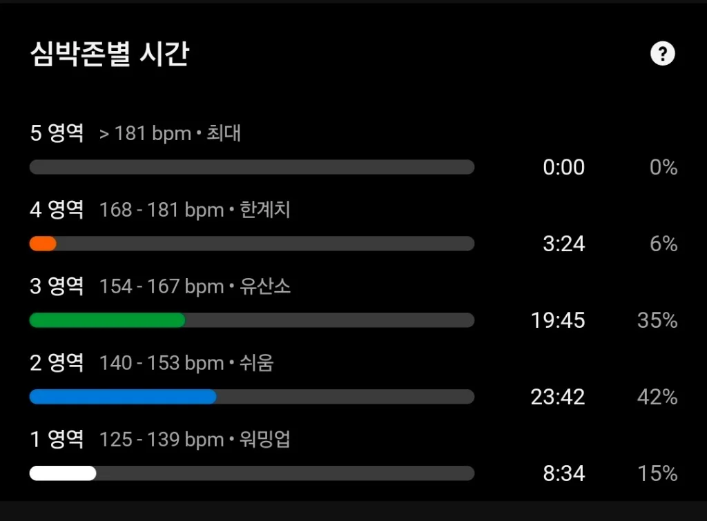
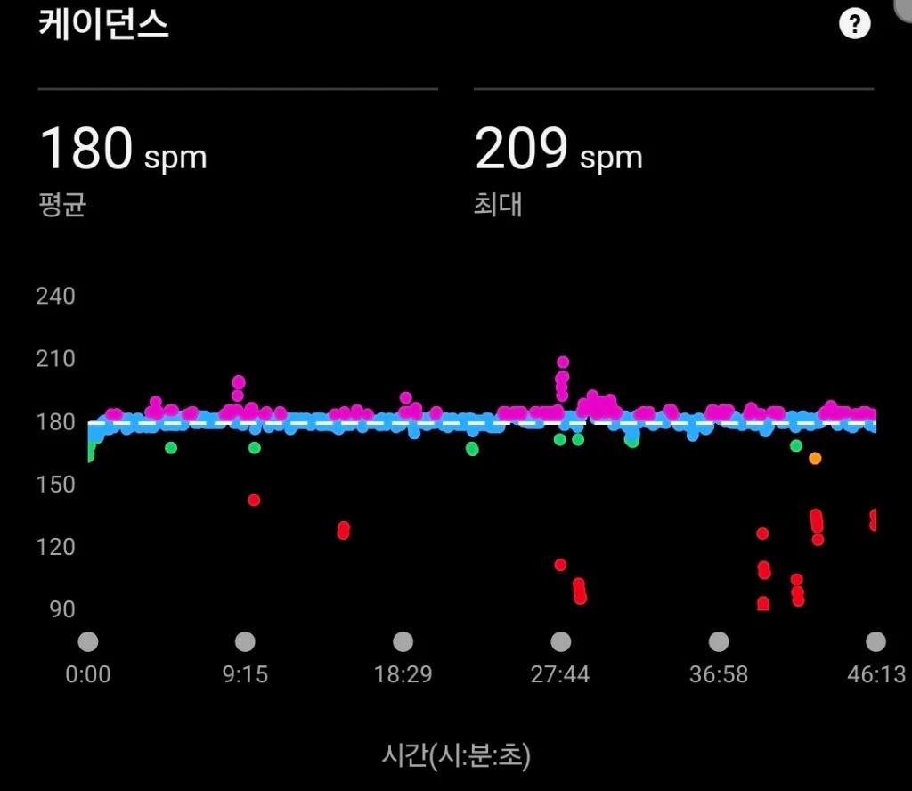
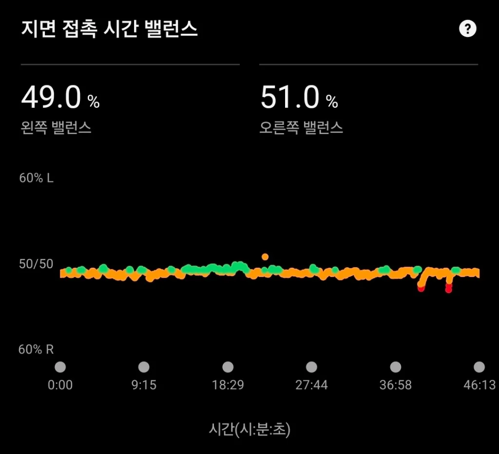
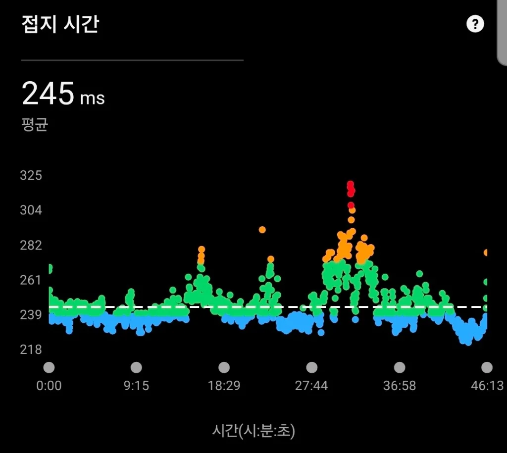

러닝화의 수명은 겉으로 보이는 고무 밑창이 아니라, 눈에 잘 띄지 않는 '미드솔 폼(Midsole Foam)의 탄성 한계선'에서 결정됩니다. 수십만 번의 착지 충격으로 미드솔의 미세 기포(Cell) 구조가 찌그러지면 충격 흡수율이 30~50% 폭락합니다. 소재별(EVA, PEBA, 초임계 폼) 피로도와 5,000km 러너의 실측 주름 판정법을 정리합니다.

📸 실측 에셋 1: 미드솔 압축 주름: 600km 이상 주파 후 미드솔 측면에 자글자글하게 자리 잡은 영구 압축 주름(Compression Creases). 기포가 복원력을 완전히 잃어 '바닥 치는 느낌(Bottoming-out)'을 유발합니다.

📸 실측 에셋 2: 힐 칼라 내부 마모: 힐 카운터(Heel Counter) 안쪽 패딩이 닳아 구멍이 나면 발뒤꿈치를 잡아주는 락다운이 풀려 발목 회전 토크가 폭증합니다.
1. 미드솔 폼의 분자 구조: 압축 영구 줄음율(Compression Set)
러닝화 미드솔은 수백만 개의 독립된 미세 기포(Closed-cell foam)로 이루어져 있습니다. 착지 시 체중의 충격을 받으면 기포 내부의 공기가 압축되며 충격을 흡수하고, 발이 지면에서 떨어질 때 복원되며 반발력을 만듭니다.
⚠️ 영구 변형(Compression Set)의 물리학
일정 한계(약 500~700km)를 넘어서면 기포의 폴리머 세포벽이 파괴되어 다시 부풀어 오르지 못하는 '영구 압축 줄음(Permanent Compression Set)' 상태에 빠집니다. 신발의 스택 하이트(스택 높이)가 2~4mm 가라앉고 측면에 깊은 수평 주름이 패이며, 충격 흡수 에너지가 고스란히 정강이 뼈와 슬개골로 전이됩니다.
2. 3대 핵심 폼 소재별 수명 & 피로 특성 비교
현재 러닝화 시장을 주도하는 3대 폼의 수명과 거동 특성은 완전히 상이합니다.

밀도가 높고 단단한 EVA/TPU 하이브리드 계열
공기 방울이 균일하게 발포된 초임계 폼| 소재 구분 | 에너지 반발율 | 평균 내구성 (수명) | 주요 사망 증상 |
|---|---|---|---|
| 전통 압축 EVA | 50 ~ 60% (보통) | 500 ~ 650 km | 돌처럼 딱딱해짐, 쿠션 꺼짐 즉시 체감 |
| 초임계 TPU / TPEE | 70 ~ 78% (우수) | 800 ~ 1,000 km (최상) | 온도 둔감, 주름 발생이 매우 적으나 무게가 다소 무거움 |
| 초고반발 PEBA (Pebax) | 85 ~ 90% (최고) | 350 ~ 450 km (짧음) | 반발 탄성 조기 고갈, 폼 찢김 및 측면 찌그러짐 |
3. 내 러닝화 폼의 사망 여부 3초 자가 진단법
🧪 3단계 폼 피로도 테스트
- 엄지손가락 덴트(Dent) 테스트: 착지 부위 미드솔 측면을 엄지손가락으로 힘껏 눌렀을 때, 새 신발처럼 탱탱하게 즉각 튕겨 나오지 않고 떡처럼 푸석하게 눌린 채 천천히 복원된다면 기포 셀이 파괴된 것입니다.
- 수평 주름 깊이 검사: 미드솔 측면의 잔주름이 손톱으로 긁었을 때 깊게 파여 걸리는 수준(영구 균열)에 도달했는지 확인합니다.
- 수평 평형(Tilt) 테스트: 신발을 평평한 식탁 위에 올려놓고 뒤에서 바라보았을 때, 내전 성향으로 인해 미드솔 안쪽이 한쪽으로 기울어져 있다면 즉시 은퇴시켜야 합니다. 발목 인대에 지속적인 회전 토크를 가합니다.
🏃 헬스장 러닝머신 속도(km/h) ⇄ 야외 페이스 1초 환산기
내 신발의 쿠션 상태와 지면 충격을 고려하여, 트레드밀 경사도 1.0% 보정 공식과 야외 실전 목표 페이스를 바로 환산해보세요.
🏃 트레드밀 ⇄ 야외 페이스 환산기 실행하기 ›- Verdejo, R., & Mills, N. J. (2004). Heel-shoe interactions and the durability of EVA foam running-shoe midsoles. Journal of Biomechanics, 37(9), 1379-1386.
- Worobets, J., et al. (2014). Influence of midsole foam stiffness and energy return on running biomechanics. Footwear Science, 6(3), 183-190.
- Cook, S. D., et al. (1985). Shock absorption characteristics of running shoes. The American Journal of Sports Medicine, 13(4), 248-253.